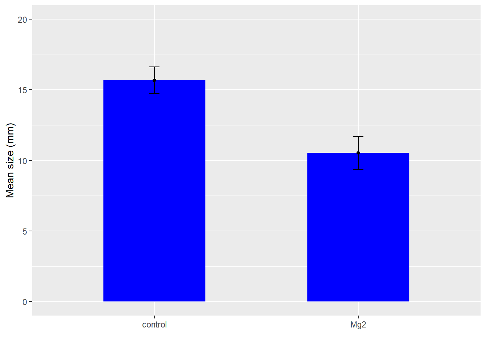

# A tibble: 2 × 7
trat mean_comp sd_comp var_comp n se_comp ci
<chr> <dbl> <dbl> <dbl> <int> <dbl> <dbl>
1 Mg2 10.5 1.54 2.39 10 0.515 -1.16
2 control 15.7 1.27 1.61 10 0.424 -0.958
dat2 |>ggplot(aes(trat, mean_comp)) +geom_col(width =0.5, fill ="blue") +geom_point() +geom_errorbar(aes(ymin = mean_comp - ci,ymax = mean_comp + ci),width =0.05)+ylim(0, 20) +labs(x =" ", y =" Mean size (mm) ")

mg2 <- data_mg |>pivot_wider(1, names_from = trat,values_from = comp) t <-t.test(mg2$Mg2, mg2$control, paired = F)#esse argumento paired é sobre a dependência dos dados. O padrão da função já é False, para teste de um conjunto de dados independentes. Mas em outros casos serão com um conjunto de dados dependentes, ou seja, será paired = True#EXEMPLO: quando a gente que ver a diferença do Mg2 no tempolibrary(report)report(t)
Effect sizes were labelled following Cohen's (1988) recommendations.
The Welch Two Sample t-test testing the difference between mg2$Mg2 and
mg2$control (mean of x = 10.52, mean of y = 15.68) suggests that the effect is
negative, statistically significant, and large (difference = -5.16, 95% CI
[-6.49, -3.83], t(17.35) = -8.15, p < .001; Cohen's d = -3.65, 95% CI [-5.12,
-2.14])
O teste t é um teste paramêtrico. precisa assumir duas premicias: 1. Normalidade dos dados = Distribuição normal ou Gaussiana 2. Homocedasticidade = variância homogênia (a dispersão dos dados são parecidas)
Visualmente a gente tem uma ideia, mas existem testes para auxiliar nas decisões: se vai precisar fazer transformação dos dados ou fazer modificações
para testar a Homocedasticidade
No caso de dois grupos, a função que é usada é o “var.test” a hipotese nula é que as variancias são iguais
attach(mg2) #a função desagrega as variáveisvar.test(Mg2, control)
F test to compare two variances
data: Mg2 and control
F = 1.4781, num df = 9, denom df = 9, p-value = 0.5698
alternative hypothesis: true ratio of variances is not equal to 1
95 percent confidence interval:
0.3671417 5.9508644
sample estimates:
ratio of variances
1.478111
A normalidade pode ser testatada por Shapiro-wilk ou por uma análise visual. No caso do teste de shapiro, a hipotese nula é a de normalidade
shapiro.test(Mg2)
Shapiro-Wilk normality test
data: Mg2
W = 0.97269, p-value = 0.9146
shapiro.test(control)
Shapiro-Wilk normality test
data: control
W = 0.93886, p-value = 0.5404
A análise visual -> se os dados estiverem em cima da linha, então a gente assume a normalidade dos dados.
# A tibble: 20 × 3
assessment rater acuracia
<chr> <chr> <dbl>
1 Unaided A 0.809
2 Unaided B 0.722
3 Unaided C 0.560
4 Unaided D 0.818
5 Unaided E 0.748
6 Unaided F 0.695
7 Unaided G 0.807
8 Unaided H 0.781
9 Unaided I 0.776
10 Unaided J 0.618
11 Aided1 A 0.907
12 Aided1 B 0.913
13 Aided1 C 0.915
14 Aided1 D 0.960
15 Aided1 E 0.959
16 Aided1 F 0.903
17 Aided1 G 0.851
18 Aided1 H 0.880
19 Aided1 I 0.950
20 Aided1 J 0.944
a <- escala2 |>pivot_wider(1,names_from = assessment,values_from = acuracia)
#Não tô conseguindo usar o attacht.test(a$Aided1, a$Unaided)
Welch Two Sample t-test
data: a$Aided1 and a$Unaided
t = 6.2288, df = 11.981, p-value = 4.423e-05
alternative hypothesis: true difference in means is not equal to 0
95 percent confidence interval:
0.1202420 0.2496529
sample estimates:
mean of x mean of y
0.9181913 0.7332439
var.test(a$Aided1, a$Unaided)
F test to compare two variances
data: a$Aided1 and a$Unaided
F = 0.17041, num df = 9, denom df = 9, p-value = 0.01461
alternative hypothesis: true ratio of variances is not equal to 1
95 percent confidence interval:
0.04232677 0.68605885
sample estimates:
ratio of variances
0.1704073
shapiro.test(a$Aided1)
Shapiro-Wilk normality test
data: a$Aided1
W = 0.92775, p-value = 0.4261
shapiro.test(a$Unaided)
Shapiro-Wilk normality test
data: a$Unaided
W = 0.87462, p-value = 0.1131
Paired t-test
data: a$Aided1 and a$Unaided
t = 5.9364, df = 9, p-value = 0.000219
alternative hypothesis: true mean difference is not equal to 0
95 percent confidence interval:
0.1144707 0.2554241
sample estimates:
mean difference
0.1849474
Caso não tivesse ocorrido normalidade, você pode transformar os dados até comprir com as premícias da análise paramétrica, ou então, trabalhar com os dados originais, mas usando estatística não-paramétrica.
wilcox.test() é o teste não-paramétrico equivalende ao test t paramétrico não pareado.